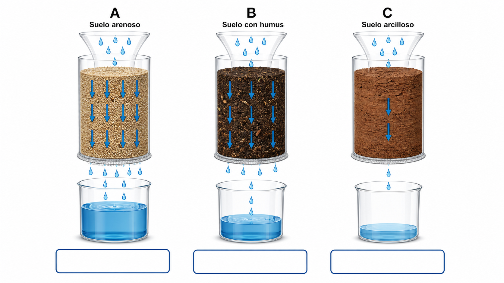
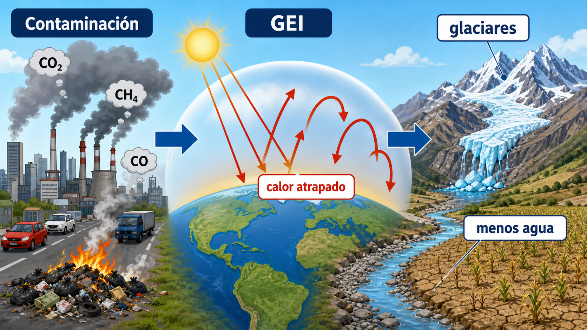
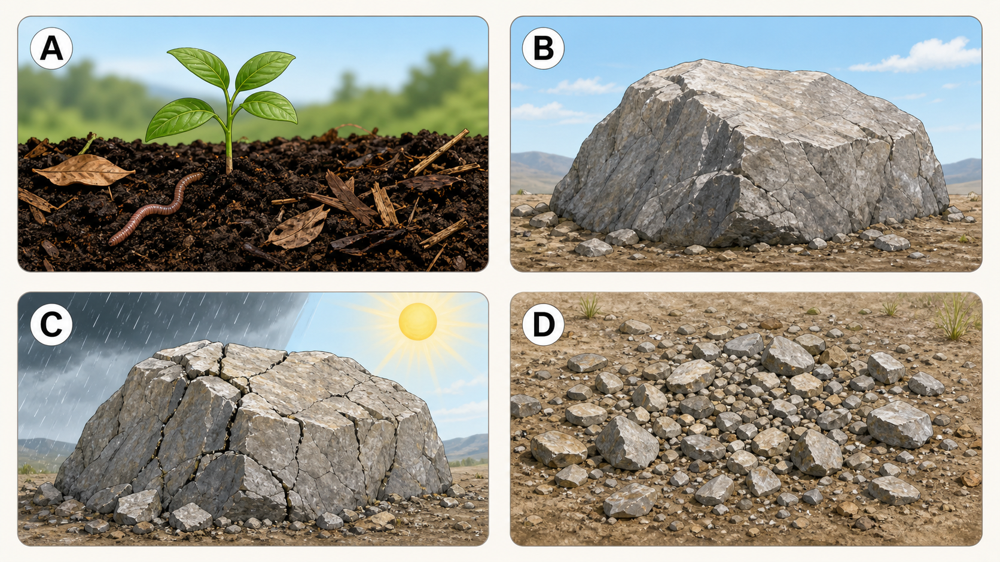
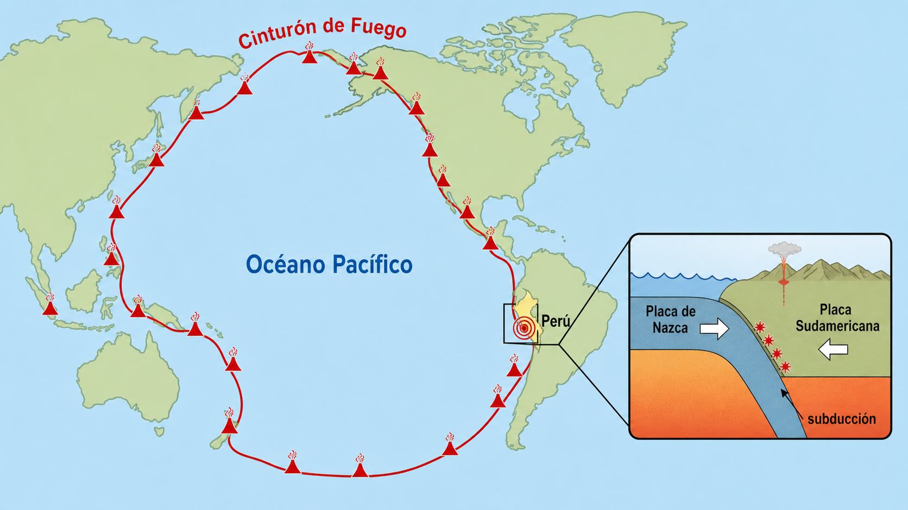

Estimulos visuales para preguntas basadas en las cuatro paginas de resumen.
Pregunta asociada: identificar filtracion rapida, equilibrada y lenta, y justificar que suelo conserva mejor la humedad.

Pregunta asociada: explicar la cadena contaminacion, GEI, calor atrapado, derretimiento de glaciares y menos agua.

Pregunta asociada: ordenar las escenas desde roca madre hasta suelo fertil y explicar meteorizacion.

Pregunta asociada: explicar por que el Peru presenta muchos sismos usando placa de Nazca, placa Sudamericana y subduccion.
